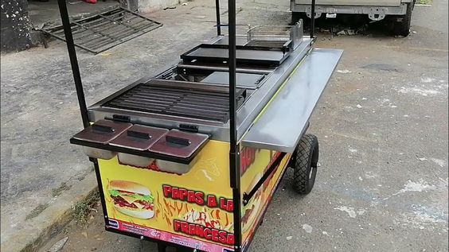
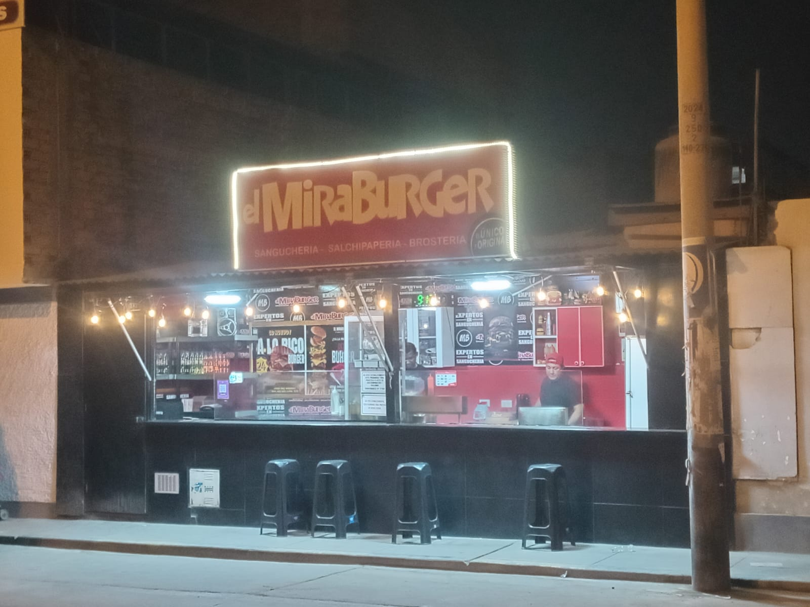

No te voy a vender la típica historia perfecta… porque MiraBurger no empezó bonito. Empezó con frustración. Yo trabajaba en cocinas finas, platos caros, nombres elegantes… pero sin alma. Veía cómo la gente pagaba mucho por comida que olvidaban al día siguiente. Y eso me quemó. Sentía que estaba cocinando para impresionar, no para hacer feliz a la gente. Un día renuncié. Sin plan. Sin inversionistas. Sin nada. Solo me llevé tres cosas: La receta de mi abuela (carne jugosa, hecha con paciencia) Su famosa salsa “mira-mira” — que no explico, se prueba Y S/200 prestados para comprar una plancha usada Con eso armé un carrito en la calle. La primera noche pensé que iba a fracasar. Nadie me conocía. Nadie confiaba. Pero llegaron mis dos amigos —de esos locos que creen en ti incluso cuando tú dudas— y empezamos. Vendimos 17 hamburguesas. No eran muchas… pero para mí lo eran todo. A mitad de la noche, un cliente probó una hamburguesa, se quedó en silencio unos segundos y luego dijo: “Mira… esto es lo mejor que he comido en mi vida”. No dijo “wow”, no dijo “increíble”… dijo “mira”. Y ahí entendí todo. No estaba construyendo solo un negocio. Estaba creando una experiencia que la gente quería volver a vivir. Esa noche, entre grasa, humo y lágrimas… nació el nombre: MiraBurger. Hoy tenemos varios locales, un equipo que se ha vuelto familia y miles de clientes que regresan no solo por la hamburguesa… sino por lo que sienten cuando la comen. Pero nunca olvidamos algo: Todo empezó con un carrito, una receta… y alguien que se atrevió a intentarlo cuando nadie más lo haría. 🍔🔥

Ese impulso de ese día fue el denonante para poner la mirada al frente, porque hay algo que se caracteriza de un ganador y un perdedor. Y eso es que; "Un ganador, es solo un perdedor que nunca se rindio a su ideales".
